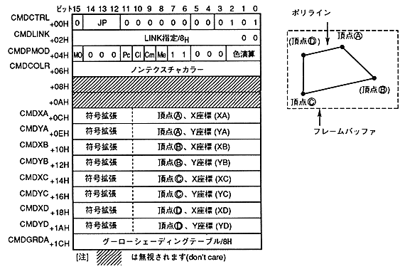

The polyline drawing command draws a rectangle in the frame buffer. The interior of the rectangle is not filled.
∙ Polyline drawing command when the end bit is 0B and the command selection bit is 0100B.
The contents of the command table are as follows.

The polyline drawing command is defined as follows.
- If the end bit is set to 0B and the command selection bit is set to 0101B, it becomes a polyline drawing command.
- Specify the jump format. When the jump format is assign or call, divide the address of the command table to be processed next by 8H and set to CMDLINK.
- Set pre-clipping. Specify valid or invalid considering the clipping area and drawing position of the part.
- Specify the user clipping valid bit and clipping mode. Specifies whether user clipping is outside or inside in clipping mode.
- Enable mesh. When the mesh is valid, the whole may not be drawn depending on the position and shape of the polyline.
- Set MSB on for shade or window processing in VDP2.
- Set the color mode to 000B. Set the color code to Non-textured color (CMDCOLR) .